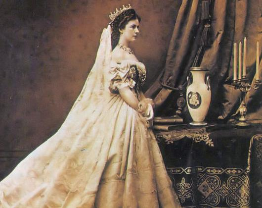

SANTA ISABEL DA HUNGRIA

FILHA DO REI DA HUNGRIA, DUQUESA DA THURÍNGIA (ALEMANHA), TERCIÁRIA FRANCISCANA, OU SEJA, A PRIMEIRA MULHER NA ALEMANHA A SE CONSAGRAR A DEUS NA ORDEM TERCEIRA DE SÃO FRANCISCO.
=ÍNDICE=
 -
FOTOGRAFIAS + CONVITE + E-MAIL + FIRMAS DE BUSCA
-
FOTOGRAFIAS + CONVITE + E-MAIL + FIRMAS DE BUSCA